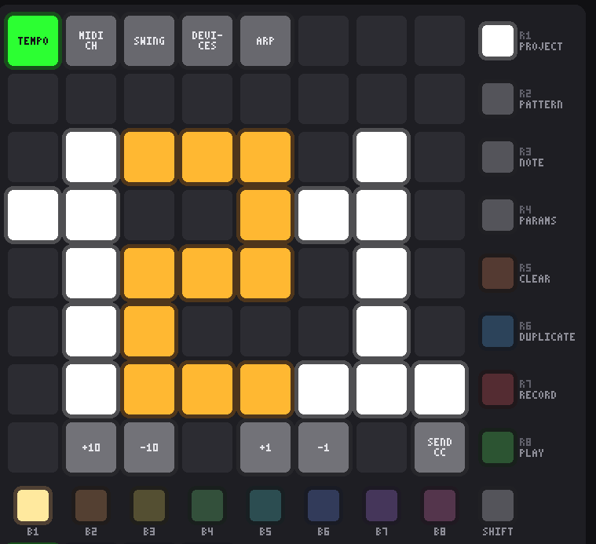
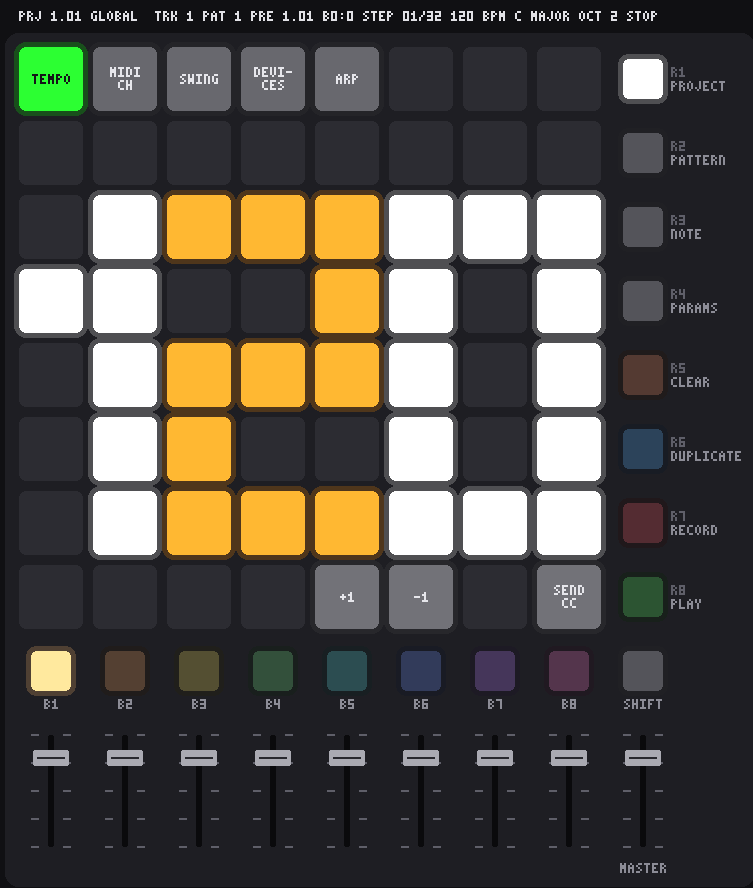
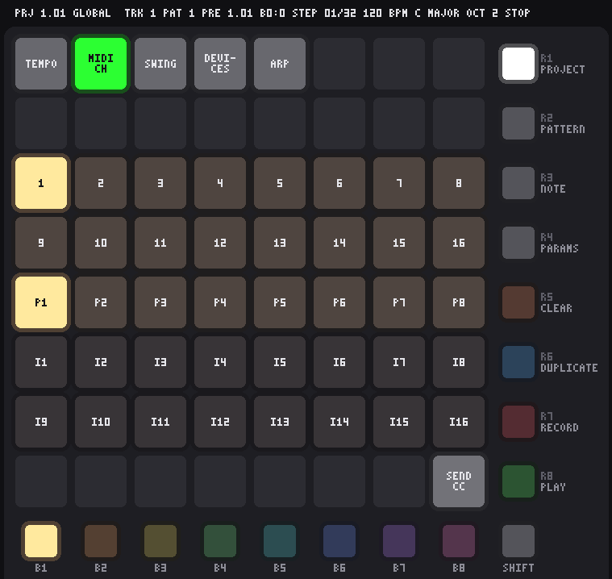
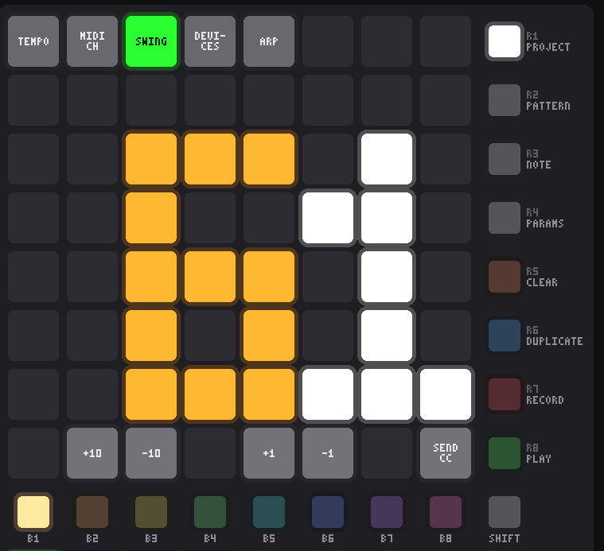
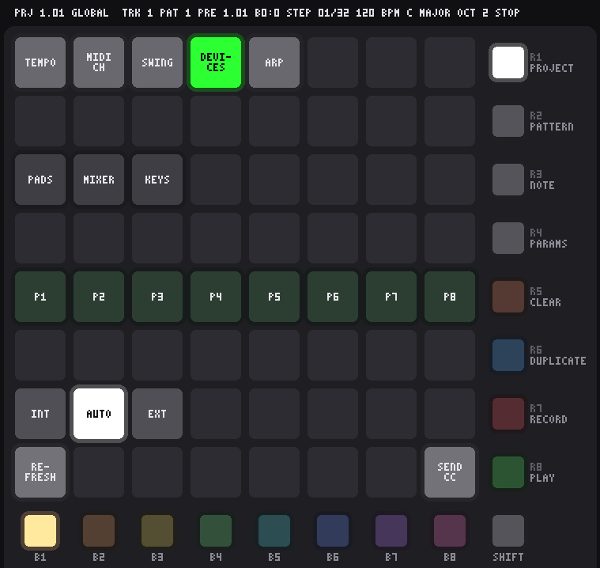
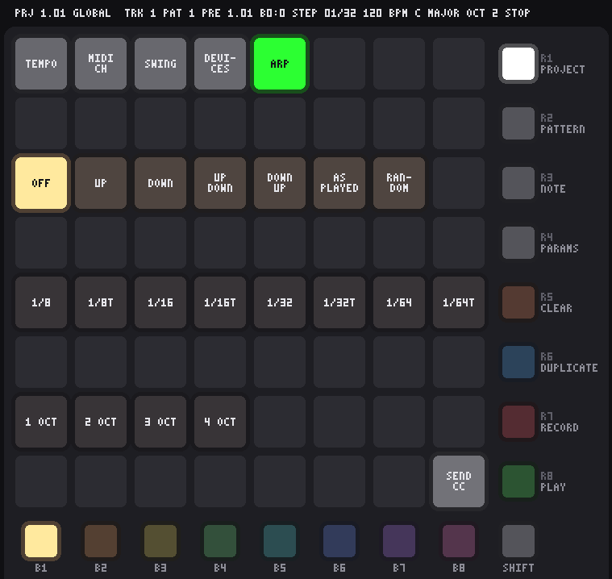

Global settings SHIFT + R3
The tempo and the swing, and where each track plays: its MIDI channel and port, or an internal instrument. The top row picks a setting; the pads below show it and change it.

- Tap a pad in the top row to pick a setting. It lights green and its value appears in the pads below. Pad 1 is the tempo, pad 2 where the selected track plays, pad 3 the swing, pad 4 the devices and pad 5 the arpeggiator; the rest of the row is kept for settings to come.
- Coarse then fine. On the bottom row, pad 2 is +10 and pad 3 is −10; pad 5 is +1 and pad 6 is −1. Coarse gets you near the tempo you want, fine lands on it.
- All four light while a setting is picked, turn white while pressed, and dim at the end they cannot move past. A coarse step near an end lands on the end rather than doing nothing because ten would overshoot.
- Nothing is picked the first time you open the mode, so the steppers do nothing until you tap a pad on the top row. After that the setting stays picked when you come back.
- The last pad of the bottom row sends every fader and knob's CC again, at the value it last reported, so gear that has moved on — after loading a project, say — comes back into line. Controls nothing has been heard from are skipped, so an untouched knob never slams a synth to zero. A MIDI Mix's own SEND ALL button does the same for its 33 controls.
- R3 goes back to Probability mode.
Tempo PAD 1

- 20 to 300 BPM, in 16th-note steps. The tempo belongs to the project and is saved with it, like the scale.
- No fader sets the tempo. A fader covering 20–300 BPM in its travel is about three BPM a pixel — enough to reach a tempo, never quite the one you wanted — and a fader that means something different in one mode is a fader you cannot trust. Fader 1 sends its CC here as it does everywhere else.
- Reading the display: three digits 3 pads wide don’t fit in 8 columns, so the hundreds digit (1, 2 or 3) is 2 pads wide. The digits touch, so they alternate white, amber, white to keep them apart. Below 100 BPM the first two columns stay dark.
- The steppers stop at 300 and 20 BPM. Holding a pad doesn’t repeat, so a long way is +10 taps rather than a held pad.
- The simulator prints what the pads do on them: TEMPO, MIDI CH, SWING and DEVICES on the top row, +1 and −1 on the up and down pads, the channel numbers 1–16, P1–P8 on the port row, and PADS, MIXER, INT/AUTO/EXT and REFRESH on the devices page.
MIDI channel, port and instrument PAD 2

- Pad 2 sets which MIDI channel the selected track plays on. Rows 3 and 4 are channels 1–8 and 9–16. The track’s channel lights in the track’s colour, and its B button stays lit so you can see whose channel it is.
- Tap a channel to move the track there. Notes the track is playing are released on the old channel first, and its preset is sent again on the new one.
- To set another track, press its B button. Here, as in Pattern mode, B1–B8 don’t jump to Note mode: they only move the selection, so you can work along the tracks setting each one’s channel, port or instrument in turn. SHIFT + B1–B8 changes the track page, so all 64 tracks are reachable without leaving.
- New tracks play on channels 1–16 in order, then start again: tracks 17–32, 33–48 and 49–64 each run 1–16 too. Channels are saved with the project, so two tracks can share one synth, or a drum track can sit on channel 10.
- The MIDI clock goes out of every port, 24 per quarter note, with Start when you press play and Stop when you stop, so a drum machine or a synth's arpeggiator on any port runs in time. Gear that follows its own clock ignores it.
- Row 5 picks the MIDI port, P1 to P8: which MIDI output the track plays out of. With 8 ports of 16 channels the sequencer addresses 128 instruments, so tracks on the same channel can still drive different gear.
- Each page of 8 tracks starts on its own port: tracks 1–8 on P1, tracks 9–16 on P2, and so on to tracks 57–64 on P8. With 64 tracks the eight pages land exactly on the eight ports, one page each. Change any track’s port here; the setting belongs to the track and is saved with the project.
- Moving a track to another port works like changing its channel: notes it is playing are released on the old port first, and its preset is sent again on the new one.
- Which hardware or software output each port reaches is up to the device the sequencer runs on. On Linux each port is an ALSA sequencer port of its own, P1 to P8, so they can be patched anywhere with
aconnector a patchbay: a 4×4 USB interface takes P1–P4, one to each socket, and nothing reaches your gear until they are wired up. - Rows 6 and 7 pick an internal instrument, I1 to I16: the track plays on the sequencer’s own sound engine instead of going out of a MIDI port.
- A track uses a port or an instrument, never both. Whichever it is on lights in the track colour and the other row dims further, so one look tells you where the track goes. Tapping the instrument it is already on sends it back to its MIDI port, and tapping any port does the same.
- Moving a track between a port and an instrument works like a channel change: its sounding notes are released first, and its preset is sent again at the new destination.
- The instruments aren’t built yet. A track on I1–I16 makes no sound until a sound engine is attached; its steps still play, and everything is saved with the project, so patterns written now will play when the instruments arrive.
Swing PAD 3

- 50 to 75. 50 is straight; at 75 every second step plays half a step late, a hard shuffle. It reads on the same display as the tempo and uses the same four stepper pads.
- Swing holds back the second step of each pair — the “and” of each beat — and leaves the first where it is. It applies to every track at once, which is what makes them groove together.
- The grid doesn’t move. Steps keep their places on the pads; only when their notes play changes. The playhead, the bar and the song count them where they sit.
- For one hit that drags or pushes rather than a groove across the pattern, use per-step micro-timing. The two add up.
- Swing belongs to the project and is saved with it.
Devices PAD 4

What is plugged in, without leaving the instrument — and the one setting that belongs to the rig rather than to the music.
- Row 3 — the gear. Pad 1 is the pad grid (an APC mini mk2), pad 2 the mixer panel (an Akai MIDI Mix) and pad 3 the keyboard being listened to. Lit white means it is here and answering; nearly dark means nothing is on it.
- Row 5 — the MIDI ports P1–P8, the same row the routing page puts them on, so a port is in the same place on both. Green means that port reaches something; dark means its messages go nowhere. A 4×4 interface lights P1–P4 and leaves P5–P8 dark — the count tells you what was found.
- Row 7 — where the beat comes from. Three pads: INT, AUTO and EXT.
The lit pad goes green while an outside clock is really driving and white while our own is, so on AUTO one pad tells you which of the two it has settled on. Auto gives up half a second after the clock stops — four clocks even at 20 BPM — and carries on by itself.
Pad INT we drive, and send MIDI clock out. Nothing coming in is listened to. AUTO follow an incoming clock while there is one, and play on our own when there isn’t. The default. EXT only ever follow. With no clock arriving, R8 waits instead of playing. - While following, the tempo isn’t yours. The tempo page shows the tempo measured from the clock coming in, and its fader and +1/−1 pads dim and do nothing rather than fight the master. The project keeps its own tempo untouched for when you go back to INT.
- We keep sending clock while following, one out for each one in, so gear downstream of us still follows the same master.
- Start and Stop from outside drive the transport whatever the source. Continue restarts from step 1 like Start — there is no song position to resume from yet.
- The clock source belongs to the instrument, not the project: it is not saved with one, so carrying a project between rigs never re-slaves anything.
- The surfaces come back by themselves. Unplug the pad grid, the mixer or the keyboard and plug it back in, and it is picked up again without your touching anything. Nothing polls for this: the MIDI system has an announcement of its own for gear appearing and disappearing, and the instrument listens to that, so the expensive part — looking at what is actually there — only happens the moment something changes.
- The output ports wait to be asked. If P1–P8 lose what they were wired to, the pads go dark and REFRESH lights up bright to offer the rewire — it doesn’t do it. Repatching in the middle of a take is your call, not the instrument’s, so it waits for the pad.
- Bottom row, pad 1 — REFRESH. Looks again: picks up a surface plugged in since the start, and wires the ports to an interface that has appeared. Dim is nothing to do; bright means something has come or gone that the ports could use. Nothing scans on a timer, because a scan walks every client of the MIDI system and that is not something to do behind the playhead’s back.
- A port coming back is hushed first. When something is unplugged mid-note, its note-off has nowhere to go and the synth can be left holding the note. There is no fixing that at the moment it happens — the cable is out — so on the way back, refreshing sends All Sound Off and All Notes Off on every channel of a port that has just reconnected.
- Ports are wired at startup by themselves, so this page is usually confirmation rather than work. A port already patched by hand is left alone — refreshing never pulls out a patch you made.
- Which device each port goes to is set in the config file.
aconnect -olists the devices you can send to and the names to use; see finding the names.
Arpeggiator PAD 5

A step holding a chord plays its notes one at a time instead of together. It belongs to the selected track, so a whole part arpeggiates without touching a single step — and it pairs with one key, one chord, where one key press fills a step with a triad or a seventh in the first place.
- Row 3 — the mode. OFF, UP, DOWN, UP-DOWN, DOWN-UP, AS PLAYED and RANDOM. Up and down climb the chord in pitch order; up-down and down-up turn round without playing the end notes twice; as played follows the order the step's notes were written in, which differs from up only when a chord was built out of order. The one in use lights in the track's colour.
- Row 5 — the rate, as note values against a step of a sixteenth: 1/8, 1/8T, 1/16, 1/16T, 1/32, 1/32T, 1/64, 1/64T. All of them divide the 24 ticks of a step exactly, so the triplets are true triplets rather than something rounded.
- Row 7 — how many octaves it climbs, 1 to 4. Two octaves on a C–E–G gives C E G C E G an octave up, then round again.
- The step's gate says how long the run lasts. A one-step gate at 1/64 is four notes; lengthen the gate and the run carries on over the steps after it. That is the whole length control — there isn't a second one to keep in step with it.
- While the arp is off, the rate and octave rows dim further: they have nothing to say.
- A step's ratchet is ignored while the arp is on. Both spread one step out in time, and two of them at once is a muddle rather than a feature.
- Per track and saved with the project. B1–B8 move to another track without leaving the page, so a rig is set up track after track.